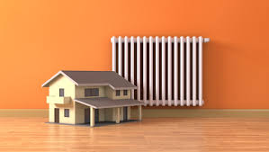

Терминология.

Аккумулирующая способность печи – свойство печи запасать тепло во время топки и постепенно отдавать его помещению в последующие часы.
Источник тепловой энергии – энергоустановка, предназначенная для производства теплоты.
Изразцы – облицовочные декоративные плитки. Они могут быть трех видов:
– изготовленные из обожженной глины с рисунком;
– покрытые с лицевой стороны глазурью;
– имеющие с обратной стороны открытую коробку (румпу).
Изразцы применяются для облицовки печей, стен, а также для украшения фасадов. Различают изразцы плоские, угловые и карнизные; гладкие и рельефные изразцы; покрытые глазурью (майоликовые) и неглазурованные (терракотовые).
Срок остывания печи – период времени от конца одной топки до начала другой. Считается, что новую топку печи необходимо начинать, когда средняя температура ее внешней поверхности понижается до температуры, превышающей на 10оC температуру воздуха в помещении.
Теплоемкость печи – способность печи аккумулировать определенное количество тепла. Теплоемкость отопительных печей измеряется длительностью остывания печи. Различают:
– печи большой теплоемкости, требующие топки 1 раз в сутки;
– печи средней теплоемкости, требующие топки 2 раза в сутки;
– печи малой теплоемкости, требующие непрерывной топки.
Теплоотдача печи – количество теплоты, поступающее от стенок печи в помещение за единицу времени. Теплоотдача печи зависит от:
– количества сожженного топлива;
– размеров внутренней тепловоспринимающей поверхности;
– толщины стенок печи и других параметров.
Тепловоздушная камера – в некоторых конструкциях печей открытая полость, обогреваемая дымооборотами, но не сообщающаяся с ними. Тепловоздушная камера используется для:
– нагрева помещений в первый период отопления, когда массив печи еще не прогрелся;
– увеличения теплоотдающей поверхности печи.